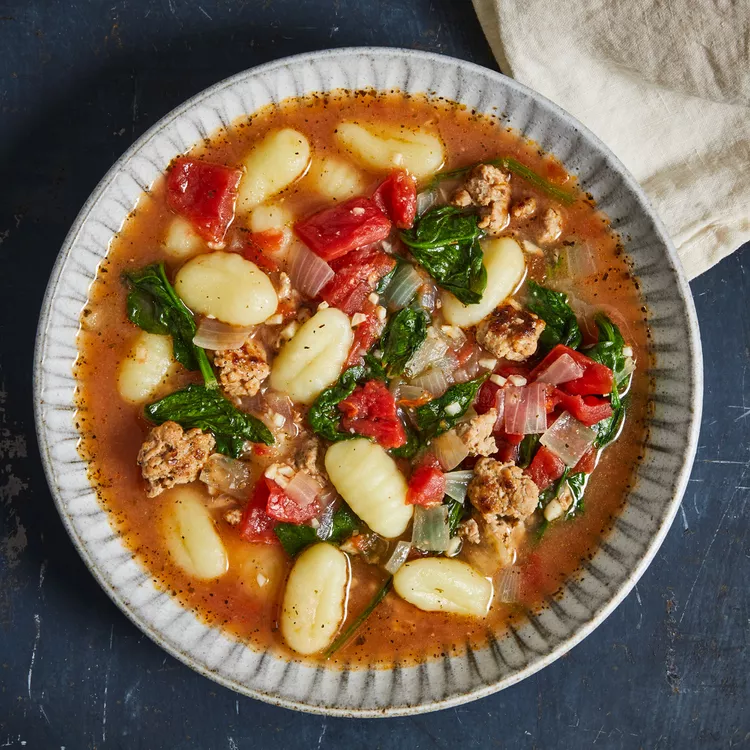

Sausage & Gnocchi Soup

You clicked on this? Good. It means you'll get to experience this tasty for yourself. Here is the blueprint:
Ingredients
- 2 tablespoons olive oil
- 12 ounces fresh Italian turkey sausage, removed from casing if necessary
- 1 yellow onion, chopped (1½ cups)
- 1 tablespoon finely chopped garlic (from 3 garlic cloves)
- 1¼ teaspoons dried Italian seasoning
- 14½-ounce can diced tomatoes
- 4 cups lower-sodium chicken broth
- 16-ounce pkg. shelf-stable potato gnocchi
- 3 cups packed baby spinach (3 ounces)
Directions
- Heat oil in a large Dutch oven over medium-high. Add sausage, onion, garlic, and Italian seasoning and then cook, stirring often and breaking up meat using a spoon, until meat is no longer pink, about 8 minutes.
- Stir in tomatoes and broth and then bring to a gentle boil over medium-high.
- Add gnocchi and spinach and then cook, stirring often, until gnocchi is al dente, about 2 minutes.